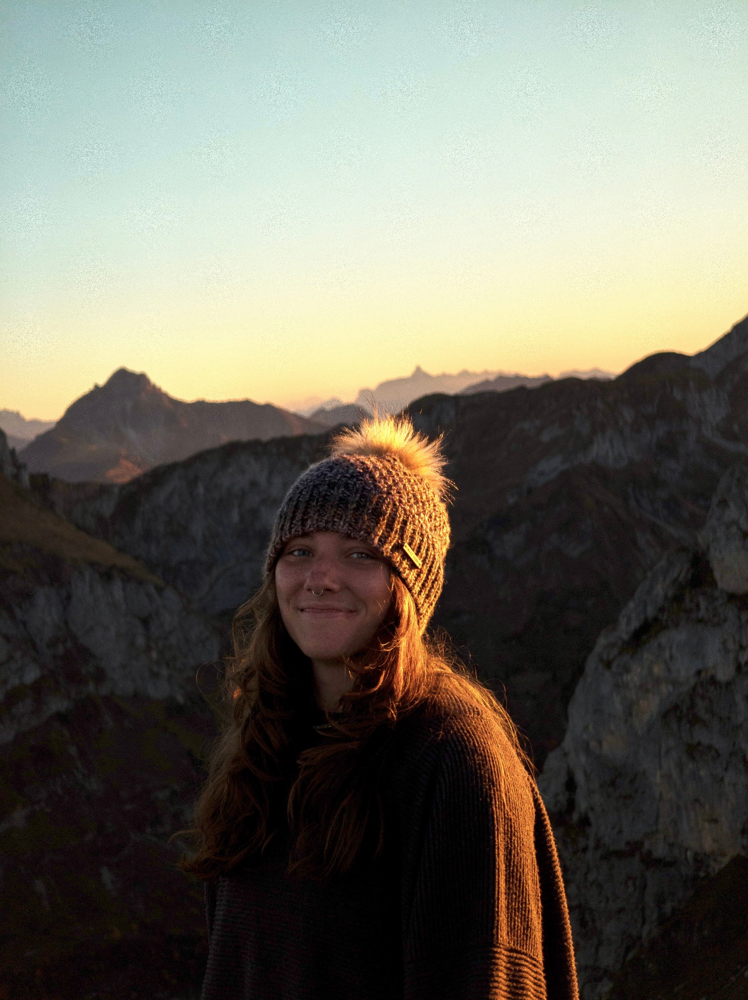
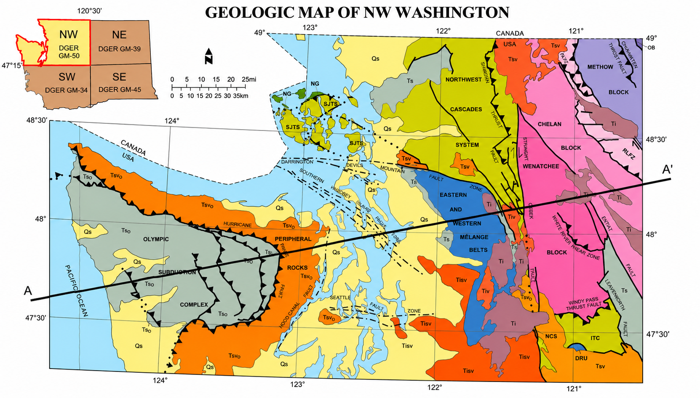
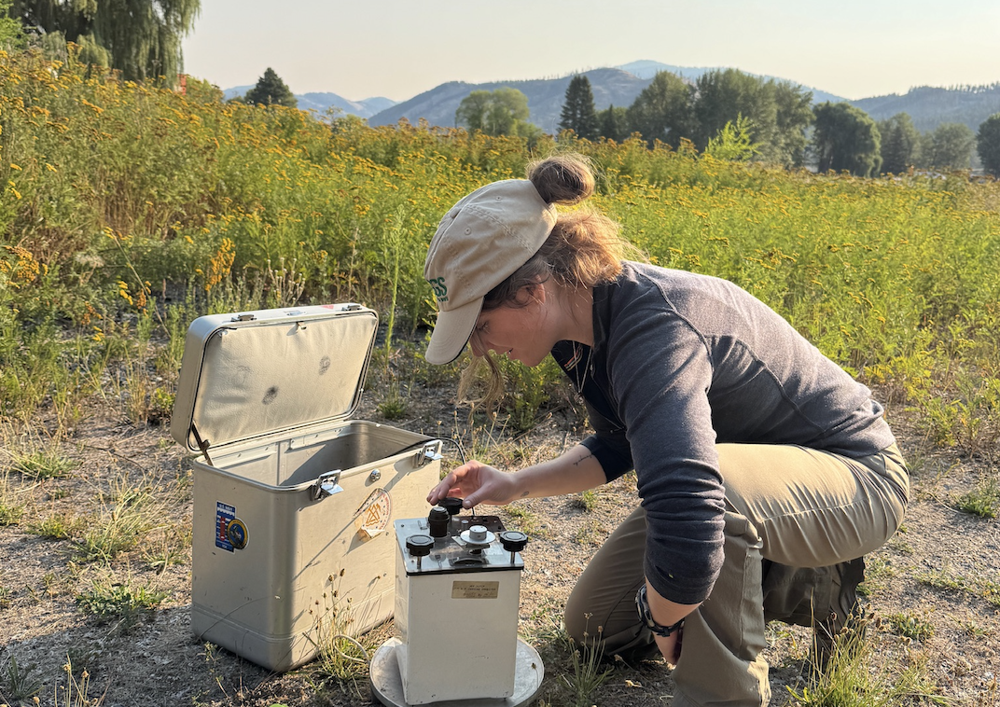
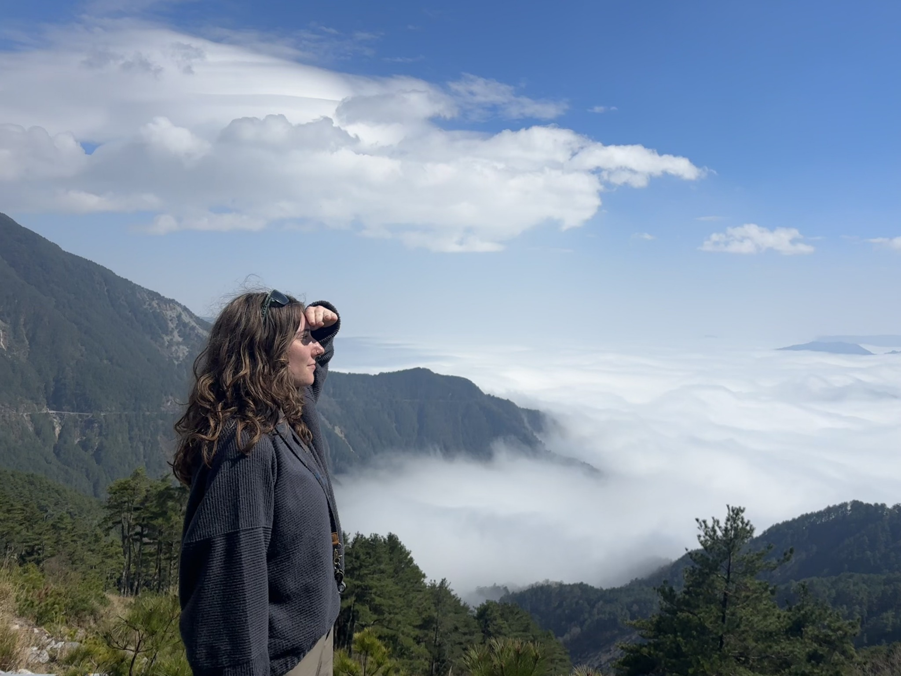
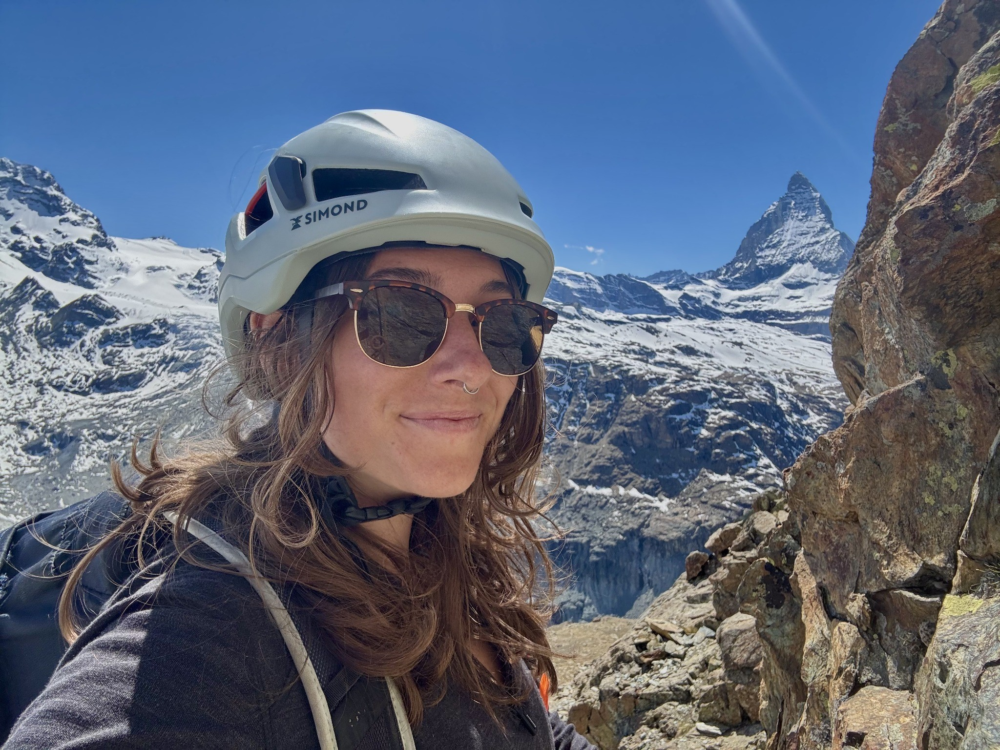

Hannah Kovic
I'm Hannah Kovic, a graduate student in Geology interested in mountain building, tectonic processes, and the interaction between magmatism and deformation.
Explore my research
01 / ABOUT
About me
I'm a graduate student in the Department of Geology and Geophysics at the University of Wyoming.
My research focuses on mountain building and the tectonic processes that shape the crust. I am interested in structural analysis, thermokinematic and flexural kinematic modeling, gravity surveys, and how tectonic and magmatic processes interact over geologic time.
Research advisor(s): Dr. Claire Ruggles
02 / RESEARCH
Research interests
Mountain building & structural analysis
I use structural analysis to better understand tectonic mountain-building processes, with a focus on fault kinematics, how faults build mountain belts, and how they propagate and deform packages of rocks.
Thermokinematic & flexural kinematic modeling
I use thermokinematic and flexural kinematic modeling to investigate deformation through time, including how tectonic processes drive topographic growth and the development of synorogenic basins.
Geophysics & magmatic–tectonic interactions
I combine gravity surveys with geological observations to investigate subsurface structure and explore the interaction between tectonic deformation and magmatic processes.
Current Project: Tectonic History of the Washington Cascades

My current project aims to reconstruct the tectonic history of the Washington Cascades over the past 45 million years. I am interested in how mountain-building processes, crustal deformation, and magmatic activity have shaped the region. My research draws on structural analysis, thermokinematic and flexural kinematic modeling, and geophysical approaches such as gravity surveys to investigate this long-term evolution.
Past Projects



03 / EXPERIENCE
Curriculum vitae
My CV includes my education, research experience, fieldwork, and academic activities.
Download CV (PDF) ↓04 / CONTACT
Let's connect.
Department of Geology and Geophysics
University of Wyoming
Laramie, Wyoming
Email: hkovic@uwyo.edu